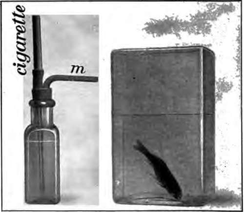

Chapter XVII. The Care Of The Nervous System And How Narcotics Affect It
Description
This section is from the book "The Human Body And Health", by Alvin Davison. Also available from Amazon: The Human Body and Health.
Chapter XVII. The Care Of The Nervous System And How Narcotics Affect It
The Brain And The Mind
The brain is smaller in women than in men, because the body is smaller. The brain of a man weighs about three pounds, and that of a woman weighs three or four ounces less. A good mind does not depend so much upon the size of the brain as upon the size and number of the processes of the nerve cells. An ox of 2000 pounds has a smaller brain than a man weighing 120 pounds. The brain of a whale weighing 10,000 pounds is no heavier than the brain of some men. The human brain is 1-44 the weight of the body, while that of an elephant is 1-500 the weight of its body.
Why The Brain Needs Exercise
In teachers, lawyers and business men, who do much thinking, the brain continues to grow until near the fortieth year of age, but in those who shovel coal or do the same work day after day requiring no thinking, the brain stops growing after the twentieth year of age. A muscle grows by use and the same is true of the brain. One cannot use the mind without using the brain.
How To Exercise The Brain
In the young there are many nerve cells with short processes. These may be made to grow by using the cells, as when one studies. Thinking causes the blood to flow to the brain and thus bring more nourishment for the cells. Memorizing the words of a book does not exercise the brain so much, as thinking out what the words mean and then trying to put the thought into one's own language.
The brain upon which the mind depends grows faster in youth than it does later in life. If the mind is not developed when one is young, it can never become as strong as it otherwise would by work in later years. On this account one should attend school regularly and try faithfully to master his lessons while young.
How Habits Are Formed
The doing of one thing over and over again calls into action the same set of nerve cells, and they finally become so accustomed to act, that they do so without the aid of the will, and often even against it. This is habit. A boy long accustomed to swearing, acting rudely, eating rapidly, or looking sullen cannot refrain from these ungentlemanly habits later in life, even when honestly trying to do so. The cultivation of agreeable manners and pleasant looks not only makes friends in school, but success in later life.
The Danger Of Bad Thoughts
Evil thoughts passing often through the nerve cells leave a blot there which can never be entirely erased. The first step toward wrong doing is in wrong thinking. Many cases are known where the reading of books and newspapers describing wicked acts has affected the nerve cells so as to cause the reader to commit robbery and other crimes.
The youth who causes to pass through his nervous system into his mind noble thoughts from good people and good books, and who learns industry, patience and politeness, is sure of friends and success in life. The mind is like a piece of ground which if not sowed with good seed and cultivated, will grow up with worthless weeds. It is, therefore, important that one should keep in good company and think and talk about what will make life more pleasant and useful.
Sleep
It is just as important to rest as to work. The only time when the nervous system rests completely is during sleep. Grown persons, as a rule, should sleep eight hours every night, while those younger should add ten or fifteen minutes for every year under the age of twenty.
Continued loss of sleep is sure to result in ill health sooner or later. The time for retiring should be the same every night, so that one will drop off to sleep within five minutes after lying down. Hard thinking or excited talking just before going to bed is likely to keep one awake.
Without the advice of a physician medicine should never be taken to make one sleep. Babies should never be given drops to put them to sleep. Drinking a half cup of hot milk, placing the feet in hot water a few minutes, or taking a warm bath is an aid to sleep. One or more windows of the bedroom should be open both at the top and bottom to admit plenty of fresh air.
The Nervous System And Tobacco
Tobacco habitually used by the young has a more serious effect on the nervous system than on any other part of the body. It prevents the brain cells from developing to their full extent and results in a slow and dull mind.
Chief Justice Brewer of the United States Supreme Court says: "No cigarette smoker can attain the highest position in the world." At Harvard during fifty years, no habitual user of tobacco ever graduated at the head of his class. The Now York Division of the Reading Railroad, which prohibits cigarette smoking by employees, says: "Men who smoke cigarettes are liable to lapses of memory, and it is not safe to trust the lives of passengers in the hands of men who have that failing".
Fig. 122. Experiment to show how tobacco affects the nerves, m is a tube through which the air is sucked from the bottle nearly full of water. This draws the smoke from the burning cigarette through the tube down into the water. The poison in the smoke from six cigarettes was caught in the water which when poured into the jar with the fish put it to sleep in a half hour and later killed it.
How Cigarettes Affect The Minds Of Boys
Long and careful observations by many persons show that cigarette smoking, not only clouds the intellect of the young, but also tends to make criminals of them. Doctor Hutchison, of the Kansas State Reformatory, says: "Cigarettes are the cause of the downfall of more of the inmates of this institution than all other vicious habits combined." Of 4117 boys received into the Illinois State Reformatory, 4000 were in the habit of using tobacco, and over 3000 were cigarette smokers.
It is unwise to begin the use of tobacco, because when the habit is once acquired, it can be broken only by one with a strong mind, who is willing to endure suffering caused by the longing nerve cells for several weeks after deprived of their accustomed poison.
Continue to:
- prev: How The Body Is Governed. Continued
- Table of Contents
- next: The Care Of The Nervous System And How Narcotics Affect It. Continued